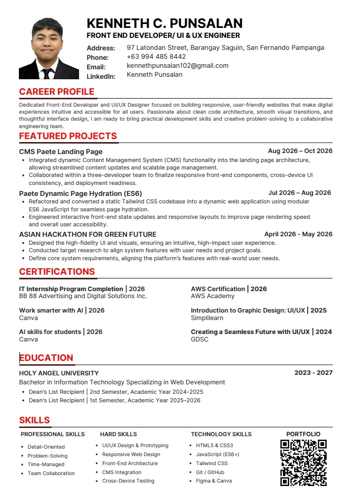

The Credentials
Logical
Foundations
A showcase of my front-end development experience, academic milestones, and 2026 technical certifications—highlighting my readiness to build clean, accessible, and scalable web applications.
Front-End Web Developer Intern
BB 88 Advertising & Digital Solutions Inc. • Jul 2026 – Oct 2026 (486 Hours)Built responsive client web pages, implemented CMS integration, and converted static Tailwind CSS templates into dynamic ES6 JavaScript architectures while executing cross-device QA testing.
BS Information Technology (Web Development)
Holy Angel University • 2023 – 2027 (Dean's List Recipient)Specializing in Front-End Web Development, mastering HTML5, CSS3, ES6 JavaScript, Tailwind CSS, Git/GitHub workflows, and accessible UI/UX prototyping.
2026 Certifications & Technical Training
BB88 • AWS Academy • Canva • Simplilearn • freeCodeCampCertified in IT Internship Program Completion (BB88), AWS Cloud Foundations (AWS Academy), AI-Assisted Workflows (Canva), UI/UX Graphic Design (Simplilearn), and Responsive Web Design (freeCodeCamp).
Game Developer
Contract / Project • 2 MonthsEngineered core mechanics and translated complex interactions into clean, readable code—cementing the foundational programming logic behind my front-end work.

Updated 2026 Resume